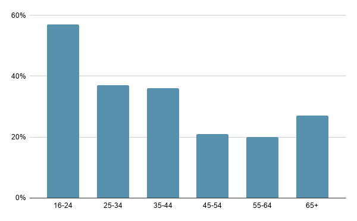

Cross-cultural Ties Through Social Media Platforms
Russia
Top 5 Social Media bases on usuage (2020)
- VKontakte - 78%
- Telegram - 72.60%
- YouTube - 64.8%
- WhatsApp - 61.2%
- Instagram - 49.2%
VK (short for VKontakte) - a Russian online social media based in Saint Petersburg.
'VKontakte' vaguely translates into ‘being in touch’.
VK is available in multiple languages but it is predominantly used by Russian-speakers. It is most popular in Russia, Ukraine, Kazakhstan, Moldova and Belarus. It is similar to Facebook, as VKontakte allows users to message their friends privately or publicly, create groups and public pages, share and tag images and videos, and play games. VKontakte is the fourth-most visited site in Russia.
VKontakte launched in October 2006. At the time, users were limited to university students who had received invites to join, similar to the beginnings of Facebook. By February 2007, the site reached 100,000 members and became the second largest social networking site in Russia. In 2011, invitations were no longer required in order to join, and the website was opened to the public . The majority of VKontakte users are young men and women between the ages of 18 and 24.
Demographic Graph
The primary age group that uses social media in Russia is 16 - 24 years old. People aged 55-64 use social networks the least; only 20% of them are registered in Social Media.
Popular Memes in Russia

Translation: “lucky lucky”
Translation: “smarter like a moron”
Translation: "bervous nreakdown"; first letters of the words are swapped
Translation: “Palace for Putin”. It is a video cover of the main oppositionist of Russia, Navalny, about Putin's palace
This is Navalny during the trial showing heart to his wife. This picture is often used in different memes about love and relationships